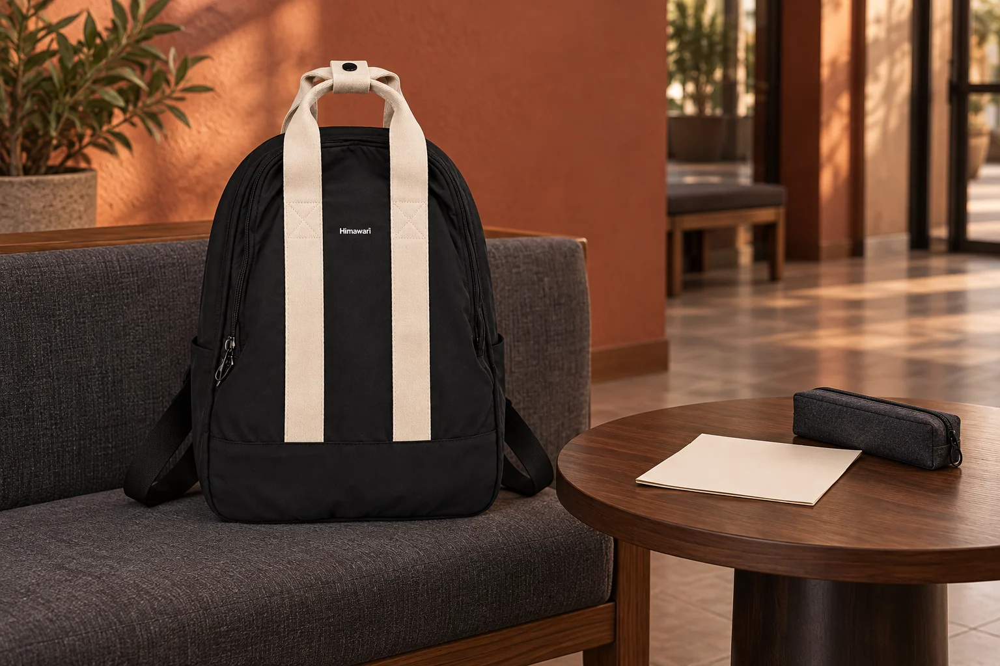

영화 모임에 가져갈 메모: 결말 이야기는 접힌 면 안쪽에

영화 이야기를 하려고 가져온 한 장의 메모에 결말까지 적혀 있습니다. 아직 보지 않은 사람이 옆에 앉았는데 종이를 먼저 펼치면, 말로 조심하더라도 메모가 보일 수 있습니다. 가방에서 종이를 꺼내기 전에 오늘 어디까지 이야기할지 정해보세요. 메모의 바깥 면과 안쪽 면을 나누는 작은 준비입니다.
먼저 함께 볼 수 있는 이야기 범위 정하기
모임을 시작할 때 참석자들이 영화를 보았는지, 결말 이야기를 해도 괜찮은지 확인합니다. 줄거리 앞부분도 누군가에게는 미리 알고 싶지 않은 내용일 수 있으니, 혼자 ‘이 정도는 괜찮겠지’라고 범위를 정하지 않습니다. 모두가 동의한 범위가 좁다면 그날은 그 안에서 대화하고, 더 자세한 이야기는 별도 시간에 나눌 수 있습니다. 준비한 질문을 전부 꺼내는 것보다 지금 함께 이야기할 수 있는 질문부터 골라보세요.
접힌 종이의 바깥에는 모임 정보만
메모 한 장을 접어 쓴다면 바깥 면에는 작품 제목과 모임 날짜, 질문 번호처럼 내용을 드러내지 않는 표시만 남깁니다. 결말이나 중요한 장면에 관한 문장은 안쪽에 적고, 바깥 면에 비쳐 보이는지도 살펴보세요. 얇은 종이라 글이 읽힌다면 종이 한 장을 더 덧대거나 별도 봉투에 넣을 수 있습니다. 접었다는 이유만으로 내용이 가려졌다고 생각하지 않고 실제로 보이는 면을 확인하는 것이 핵심입니다.
꺼내 둔 메모도 대화 범위에 맞춰 펼치기
가방에서 꺼낸 뒤에는 합의한 질문만 볼 수 있게 종이를 놓습니다. 다른 사람이 보이는 자리에서 메모를 전부 펴거나 돌려 읽기 전에 같은 범위에 동의했는지 다시 확인하세요. 사진이나 단체 대화방에 모임 메모를 남길 때도 결말이 적힌 면이 함께 찍히지 않는지 확인합니다. 공유할 필요가 있다면 내용이 없는 표지나 모두가 볼 수 있는 부분만 따로 남길 수 있습니다. 이 글은 특정 작품의 줄거리나 결말을 소개하지 않습니다.
귀가할 때는 다음 질문을 바깥 표시로
모임을 마친 뒤 아직 이야기하지 못한 질문 번호를 바깥 면에 표시합니다. 다음 모임에서는 그 번호부터 확인하고, 참석자가 달라졌다면 공개 범위를 다시 정하세요. 종이는 접힌 상태를 유지할 수 있는 크기의 파일이나 봉투에 넣고, 필기구는 종이 사이에 끼우지 않습니다. No.2505 사진의 아이보리 손잡이와 검정 본체는 실제 원본을 참고한 외관입니다. 메모를 담을 내부 자리나 들어가는 파일 크기는 실제 가방과 사용하는 파일을 대조해 확인하세요.
참고·안내
- Himawari No.2505 제품 정보
- 실제 Himawari No.2505 원본과 제조사 카탈로그 외부 치수 30 × 43 × 14 cm를 참고한 AI 연출 사진입니다. 메모·필통은 가상의 소품이며 제품 구성품이나 수납량을 뜻하지 않습니다.
자주 묻는 질문
접어 두면 결말 메모를 따로 표시하지 않아도 되나요?
접은 상태에서도 바깥으로 글이 드러나거나 비칠 수 있습니다. 보이는 면을 살피고, 내용을 펼치기 전에는 참석자들과 대화 범위를 확인하세요.
모임 사진에 메모가 함께 나와도 괜찮을까요?
공유할 사람에게 공개하지 않기로 한 내용이 보이는지 먼저 확인하세요. 필요한 부분만 따로 촬영하거나 내용 없는 표지를 남길 수 있습니다.